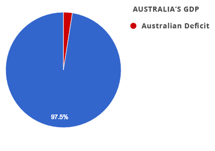
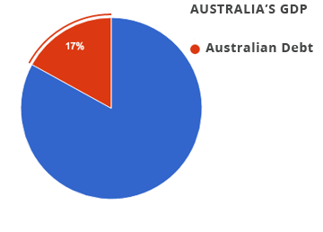

Part One: The Australian Government Budget
Much has been made of Australia’s budget, and its debt and deficit. Our politicians talk endlessly about the amount that these concepts matter, and ask us to believe them when they tell us about the state of Australia’s finances. That’s fine of course, but from my brief surveys of friends and family who are informed, have good jobs, and who have at least a little interest in these matters (or politics more generally), many do not know the figures involved. That’s fine - to a point. Not having all the latest stats and graphs in your head is totally understandable. But if these concepts are so important (and how could they not be if the politicians keep referring to these matters), then at least a rough sense of what is going on and what these numbers mean will help people to better understand these issues.
Mr Speaker, this cannot be just another budget, because these are extraordinary times. This budget is an economic plan, it's not just another budget... ...By continuing to ensure the government lives within its means, to balance the budget and reduce the burden of long-term debt. In this budget we will continue to cut unnecessary waste and keep government spending under control to balance the budget over time.
From Morrison’s 2016 budget speech.
To get your head around the figures involved means understanding a few key concepts.
GDP
Revenue
Deficit vs Surplus vs Debt
GDP
GDP (a country’s Gross Domestic Product) is the total amount of economic activity. This is the grand total of everything that anyone does in Australia involving money - whether that be selling lattes, giving a haircut, or any number of other things (except a few activities that exist off the books). Everything that uses money in some way contributes to GDP.
In 2015-16 this is estimated to be $1.62 trillion (the 12th largest in the world). Just to be clear, $1T is one thousand billions. This could also be seen as around 1,600 billion dollars. Let's break this down: one million is one thousand thousands - 1,000,000, a billion is one thousand millions - 1,000,000,000, and one trillion is one thousand billions - 1,000,000,000,000.
[2] http://www.abs.gov.au/AUSSTATS/abs@.nsf/mf/1345.0?opendocument?opendocument#from-banner=LN
TLDR:
GDP - meaning: All the money moving around in a country.
GDP - value: $1.6 Trillion (roughly) for Australia.
Revenue
The total taken in tax revenue during 2015-16 comes to around $350 billion. This is equal to around 22% of GDP. This is the money that the government takes in - although at times it doesn’t take in quite enough to pay for the programs that it has on its books (and on occasion the government can take in too much).
[3] http://data.worldbank.org/indicator/GC.TAX.TOTL.GD.ZS
TLDR:
Australian Government Revenue - meaning: How much of GDP the government makes use of.
Australian Government Revenue - value: 22% of GDP
Why talk in percentage of GDP?
Let’s say you owe $50,000, and you also earn $50,000 per year. That’s not a good situation. There you would owe 100% of what you earn in a year. Clearly you couldn’t pay it off in the next year - you have stuff to buy (like Netflix subscriptions, coffee, your mortgage, whathaveyou). The situation is obviously a lot worse if you only earn $25k, as you would owe 200% of your wage. On the other hand, if you earn $250,000, the amount you owe is only 20% of the the amount that you earn in a year, and so you are probably in a good position to pay that money back promptly (given that you endeavour to buy one or two fewer ivory back scratchers or Porches). In fact, you would almost certainly be able to borrow more were it necessary. (Obviously, governments don’t have the whole of the GDP at their disposal - they only take a proportion of this to spend.)
Deficit vs Surplus vs Debt
The deficit is the amount that the government falls short on its revenue as compared to its spending. This is the year by year value that contributes to the total debt - the value of all the accrued deficits (or surpluses) - all of the decisions made in money matters by the Australian government over the years. The current deficit is roughly $40B, or 2.5% of GDP, adding to a net debt that is currently around $260 billion, or equivalent to roughly 17% of GDP (and the gross debt a little over $400 billion, or roughly 25% or a quarter of GDP).
Net debt takes into account all the assets that the Australian Government owns, whereas gross debt his the total owed all up. Gross debt would be the equivalent of not counting the house that you own in the calculations, whereas the net debt acknowledges that you have debt, and it might be a lot, but that you also own a house, and that house is worth something if it came to be sold. It’s customary in pointyhead circles to talk more of the net government debt, as it gives a better sense of Australia’s fiscal situation.
TLDR:
Australian govt budget deficit - meaning: The difference between how much the government spends and how much it takes in revenue.
Australian current deficit - value: 2.5% of GDP
Australian Government Net Debt - meaning: The total the Australian government owes.
Australian Government Net Debt - value: 17% of GDP

[5]https://www.cia.gov/library/publications/the-world-factbook/rankorder/2222rank.html
[6]http://www.budget.gov.au/2014-15/content/myefo/download/MYEFO_2014-15.pdf
[7]http://www.aph.gov.au/About_Parliament/
[8]http://www.budget.gov.au/2014-15/content/bp1/html/bp1_bst7.htm
In summary, Australia’s GDP is around $1.6T, our net debt around 17% of that figure, and our current deficit around 2.5% of GDP.
GDP: $1.6 trillion Net Debt: 17% Deficit: 2.5% Government revenue: 22%A lot is made of debt and deficit during the election. Fair enough too - it’s important stuff. But knowing these numbers is vital to being able to understand the situation. Having said that, knowing these numbers is not quite enough, because they don’t exist in a vacuum. We need to have a look at the global comparisons to get an idea where we stand in an international context.